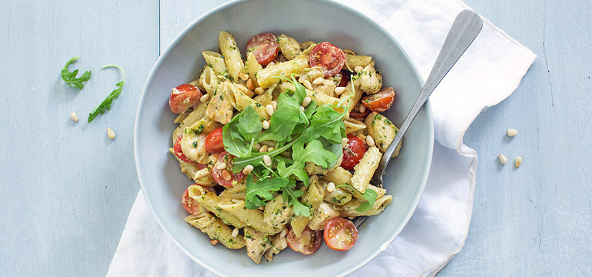

Pasta Pesto met kip

Ingrediënten
- 300 gr pasta
- 400 gr kipfilet (in stukjes)
- 1 ajuin
- 250 ml room
- 250 gr cherry tomaatjes
- peper en zout
- scheutje olijfolie
- 60 gr pijnboompitten (geroosterd)
- handje rucola
- 4 eetlepels pesto (zelfgemaakte pesto of kant en klaar)
Bereiding
- Snipper het uitje en fruit even aan in een scheutje olijfolie. Voeg de blokjes kip toe en bak ongeveer 5 minuten. Kook ondertussen de pasta gaar. Voeg de (zelfgemaakte) pesto en room toe aan de kip en roer goed door. Proef nog even of er nog peper of zout bij moet.
- Laat de pestosaus een paar minuutjes zachtjes pruttelen. Voeg dan de gekookte pasta toe en schep er doorheen. Halveer de tomaatjes en roer ook door de pasta pesto en verwarm nog een minuutje mee. Serveer de pasta pesto in de pan of op een bord met een handje rucola en de geroosterde pijnboompitten.
- Tip: deze pasta pesto is ook lekker met geraspte kaas. Gebruik ook eens stukjes vegetarische kip voor een vegetarische variant op de kip pesto.